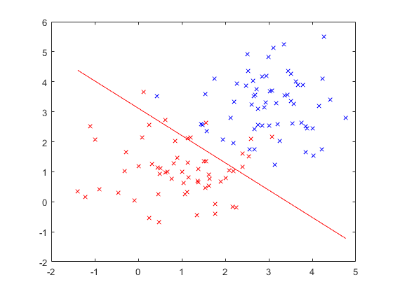

clear all
close all
N=120;
opt.verbose=1;
mix.m=2;
mix.state(1).m=[1,1];
mix.state(2).m=[3,3];
for i=1:2,
mix.state(i).C=eye(2);
mix.state(i).prior=1/2;
end
[x,label] = spm_samp_mix (mix,N);
if opt.verbose
figure
col={'rx','bx','kx'};
for i=1:2,
ind=find(label==i);
plot(x(ind,1),x(ind,2),col{i});
hold on
end
end
ind = randperm(N);
x = [x(ind,:),ones(N,1)];
label = label(ind,:);
opt.diag=0;
opt.verbose=1;
tic; bsr = bsr_fit (x,label,opt); toc
bsr_plot_boundary (bsr,x);
Iteration 1, Log Joint = -128.706239
Iteration 2, Log Joint = -64.630428
Iteration 3, Log Joint = -59.458903
Iteration 4, Log Joint = -53.155172
Iteration 5, Log Joint = -51.222923
Iteration 6, Log Joint = -50.846599
Iteration 7, Log Joint = -50.521841
Iteration 8, Log Joint = -50.412430
Iteration 9, Log Joint = -50.301160
Iteration 10, Log Joint = -50.217173
Iteration 11, Log Joint = -50.139155
Iteration 12, Log Joint = -50.071256
Iteration 13, Log Joint = -50.008759
Iteration 14, Log Joint = -49.953547
Iteration 15, Log Joint = -49.902819
Iteration 16, Log Joint = -49.857880
Iteration 17, Log Joint = -49.816652
Iteration 18, Log Joint = -49.780068
Iteration 19, Log Joint = -49.746553
Iteration 20, Log Joint = -49.716771
Iteration 21, Log Joint = -49.689524
Iteration 22, Log Joint = -49.665279
Iteration 23, Log Joint = -49.643125
Iteration 24, Log Joint = -49.623388
Iteration 25, Log Joint = -49.605374
Iteration 26, Log Joint = -49.589307
Iteration 27, Log Joint = -49.574659
Iteration 28, Log Joint = -49.561580
Iteration 29, Log Joint = -49.549667
Iteration 30, Log Joint = -49.539020
Iteration 31, Log Joint = -49.529332
Iteration 32, Log Joint = -49.520666
Iteration 33, Log Joint = -49.512786
Iteration 34, Log Joint = -49.505732
Iteration 35, Log Joint = -49.499322
Iteration 36, Log Joint = -49.493580
Iteration 37, Log Joint = -49.488367
Iteration 38, Log Joint = -49.483693
Elapsed time is 0.081094 seconds.
